일반기계기사 (2020-06-06 기출문제)
1과목: 재료역학
1. 원형단면 축에 147kW의 동력을 회전수 2000rpm으로 전달시키고자 한다. 축 지름은 약 몇 cm로 해야 하는가? (단, 허용전단응력은 τω=50MPa이다.)
- 4.2
- 4.6
- 8.5
- 9.9
(정답률: 61%)

2. 그림과 같이 외팔보의 중앙에 집중하중 P가 작용하는 경우 집중하중 P가 작용하는 지점에서의 처짐은? (단, 보의 굽힘강성 El는 일정하고, L은 보의 전체 길이이다.)
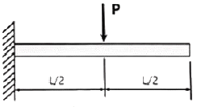
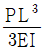
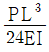
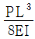
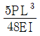
(정답률: 43%)
3. 직사각형 단면의 단주에 150kN 하중이 중심에서 1m만큼 편심되어 작용할 때 이 부재 BD에서 생기는 최대 압축응력은 약 몇 kPa인가?
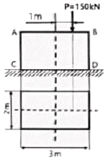
- 25
- 50
- 75
- 100
(정답률: 40%)
4. 그림과 같은 균일 단면의 돌출보에서 반력 RA는? (단, 보의 자중은 무시한다.)
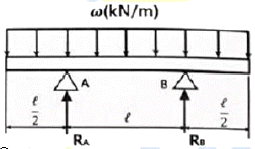
- ωl
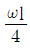
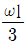
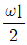
(정답률: 59%)
5. 양단이 고정된 축을 그림과 같이 m-n단면에서 T만큼 비틀면 고정단 AB에서 생기는 저항 비틀림 모멘트의 비 TA/TB는?
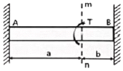
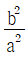
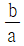
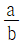
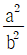
(정답률: 57%)
6. 그림의 평면응력상태에서 최대 주응력은 약 몇 MPa인가? (단, ax=175MPa, ay=35MPa, τxy=60MPa이다.)
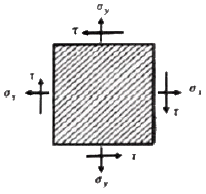
- 95
- 1⑤
- 163
- 197
(정답률: 60%)
7. 동일한 길이와 재질로 만들어진 두 개의 원형단면 축이 있다. 각각의 지름이 d1, d2일 때 각 축에 저장되는 변형에너지 u1, u2의 비는? (단, 두 축은 모두 비틀림 모멘트 T를 받고 있다.)
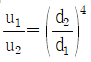
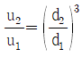
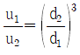
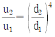
(정답률: 52%)
8. 진도 레일의 온도가 50℃에서 15℃로 떨어졌을 때 레일에 생기는 열응력은 약 몇 MPa인가? (단, 선팽창계수는 0.000012/℃, 세로탄성계수는 210GPa이다.)
- 4.41
- 8.82
- 44.1
- 88.2
(정답률: 65%)
9. 그림과 같이 양단에서 모멘트가 작용할 경우 A지점의 처짐각 θA는? (단, 보의 굽힘 강성 El은 일정하고, 자중은 무시한다.)
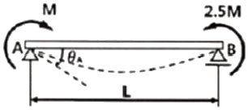
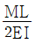
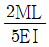
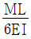
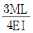
(정답률: 36%)
10. 그림과 같은 트러스 구조물에서 B점에서 10kN의 수직 하중을 받으면 BC에 작용하는 힘은 몇 kN인가?
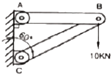
- 20
- 17.32
- 10
- 8.66
(정답률: 61%)
11. 그림과 같이 길고 얇은 평판이 평면 변형률 상태로 σx를 받고 있을 때, ϵx는?
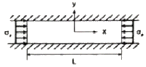
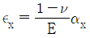
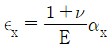
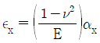
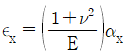
(정답률: 35%)
12. 그림과 같은 빗금 친 단면을 갖는 중공축이 있다. 이 단면의 O점에 관한 극단면 2차모멘트는?
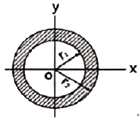
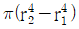
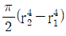
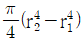
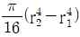
(정답률: 47%)
13. 외팔보의 자유단에 연직 방향으로 10kN의 집중 하중이 작용하면 고정단에 생기는 굽힘 응력은 약 몇 MPa인가? (단, 단면(폭×높이)b×h=10cm×15cm, 길이 1.5m이다.)
- 0.9
- 5.3
- 40
- 100
(정답률: 59%)
14. 지름 300mm의 단면을 가진 속이 찬 원행보가 굽힘을 받아 최대 굽힘 응력이 100MPa이 되었다. 이 단면에 작용한 굽힘 모멘트는 약 몇 kNㆍm인가?
- 265
- 315
- 360
- 425
(정답률: 62%)
15. 원형 봉에 축방향 인장하중 P=88kN이 작용할 때 직경의 감소량은 약 몇 mm인가? (단, 통은 길이 L=2m, 직경 d=40mm, 세로탄성계수는 70GPa, 포아송비 μ=0.3이다.)
- 0.006
- 0.012
- 0.018
- 0.036
(정답률: 57%)
16. 전체 길이가 L이고, 일단 지지 및 타단 고정보에서 삼각형 분포 하중이 작용할 때, 지지점 A에서의 반력은? (단, 보의 굽힘강성 EI는 일정하다.)
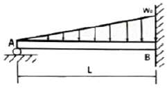
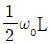
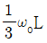
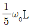
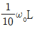
(정답률: 38%)
17. 지름 D인 두서가 얇은 링(ring)을 수평면 내에서 회전 시킬 때, 링에 생기는 인장응력을 나타내는 식은? (단, 링의 단위 길이에 대한 무게를 W, 링의 원주속도를 V, 링의 단면적을 A, 중력가속도를 g로 한다.)
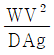
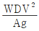
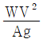
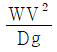
(정답률: 35%)
18. 단면적이 4cm2인 강봉에 그림과 같은 하중이 작용하고 있다. W=60kN, P=25kN, I=20cm일 때 BC부분의 변형률 ϵ은 약 얼마인가? (단, 세로탄성계수는 200GPa이다.)
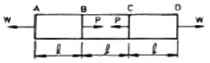
- 0.00043
- 0.0043
- 0.043
- 0.43
(정답률: 53%)
19. 오일러 공식이 세장비
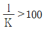
에 대해 성립한다고 할 때, 양단이 한지인 원형단면 기둥에서 오일러 공식이 성립하기 위한 길이 "l"과 지름 "d"와의 관계가 옳은 것은? (단, 단면의 회전반경을 k라 한다.)- l＞4d
- l＞25d
- l＞50d
- l＞100d
(정답률: 59%)
20. 그림과 같은 단면을 가진 외팔보가 있다 그 단면의 자유단에 전단력 V=40kN이 발생한다면 단면 a-b 위에 발생하는 전단응력은 약 몇 MPa인가?
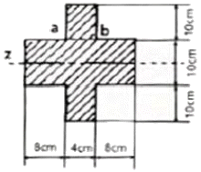
- 4.57
- 4.88
- 3.87
- 3.14
(정답률: 28%)
2과목: 기계열역학
21. 압력 1000kPa, 온도 300℃ 상태의 수증기(엔탈비 3⑤1.15kJ/kg, 엔트로피 7.1228kJ/kgㆍK)가 증기터빈으로 들어가서 100kPa상태로 나온다. 터빈의 출력 일이 370kJ/kg일 때 터빈의 효율(%)은?
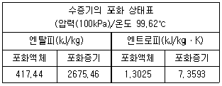
- 15.6
- 33.2
- 66.8
- 79.8
(정답률: 34%)
22. 열역학 제2법칙에 대한 설명으로 틀린 것은?
- 효율이 100%인 열기관은 얻을 수 없다.
- 제 2종의 영구 기관은 작동 물질의 종류에 따라 가능하다.
- 열은 스스로 저온의 물질에서 고온의 물질로 이동하지 않는다.
- 열기관에서 작동 물질의 일을 하게 하려면 그보다 더 저온인 물질이 필요하다.
(정답률: 59%)
23. 300L 체적의 진공인 탱크가 25℃, 6MPa의 공기를 공급하는 관에 연결된다. 밸브를 열어 탱크 안의 공기 압력이 5MPa이 될 때까지 공기를 채우고 밸브를 닫았다. 이 과정이 단열이고 운동에너지와 위치에너지의 변화를 무시한다면 탱크 안의 공기의 온도(℃)는 얼마가 되는가? (단, 공기의 비열비는 1.4이다.)
- 1.5
- 25.0
- 84.4
- 144.2
(정답률: 19%)
24. 단열된 가스터빈의 입구 측에서 압력 2MPa, 온도 1200 K인 가스가 유입되어 출구 측에서 압력 100kPa, 온도 600K로 유출된다. 5MW의 출력을 얻기 위해 가스의 질량유량(kg/s)은 얼마이어야 하는가? (단, 터빈의 효율은 100%이고, 가스의 정압비열은 1.12kJ/(kgㆍK)이다.)
- 6.44
- 7.44
- 8.44
- 9.44
(정답률: 44%)
25. 공기 10kg이 압력 200kPa, 체적 5m3 상태에서 압력 400kPa, 온도 300℃인 상태로 변한 경우 최종 체적(m3)은 얼마인가? (단, 공기의 기체상수는 0.287kJ/kgㆍK이다.)
- 10.7
- 8.3
- 6.8
- 4.1
(정답률: 58%)
26. 이상적인 냉동사이클에서 응축기 온도가 30℃, 증발기 온도가 -10℃일 때 성적 계수는?
- 4.6
- 5.2
- 6.6
- 7.5
(정답률: 59%)
27. 초기 압력 100kPa, 초기 체적 0.1m3인 기체를 버너로 가열하여 기체 체적이 정압과정으로 0.5m3이 되었다면 이 과정동안 시스템이 외부에 한 일(kJ)은?
- 10
- 20
- 30
- 40
(정답률: 62%)
28. 랭킨사이클에서 보일러 입구 엔탈피 192.5kJ/kg, 터빈 입구 엔탈피 3002.5kJ/kg, 응축기 입구 엔탈피 2361.8kJ/kg일 때 열효율(%)은? (단, 펌프의 동력은 무시한다.)
- 20.3
- 22.8
- 25.7
- 29.5
(정답률: 57%)
29. 준평형 정적과정을 거치는 시스템에 대한 열 전달량은? (단, 운동에너지와 위치에너지의 변화는 무시한다.)
- 0이다.
- 이루어진 일량과 같다.
- 엔탈피 변화향과 같다.
- 내부에너지 변화량과 같다.
(정답률: 56%)
30. 1kW의 전기히터를 이용하여 101kPa, 15℃의 공기로 차있는 100m3의 공간을 난방하려고 한다. 이 공간은 견고하고 밀폐되어 있으며 단열되어 있다. 히터를 10분동안 작동시킨경우, 이 공간의 최종온도(℃)는? (단, 공기의 정적비열은 0.718kJ/kgㆍK이고, 기체상수는 0.287kJ/kgㆍK이다.)
- 18.1
- 21.8
- 25.3
- 29.4
(정답률: 46%)
31. 펌프를 사용하여 150kPa, 26℃의 물을 가역단열과정으로 650kPa까지 변화시킨 경우, 펌프의 일(kJ/kg)은? (단, 26℃의 포화액의 비체적은 0.001m3/kg이다.)
- 0.4
- 0.5
- 0.6
- 0.7
(정답률: 57%)
32. 열역학적 관점에서 다음 장치들에 대한 설명으로 옳은 것은?
- 노즐은 유체를 서서히 낮은 압력으로 팽창하여 속도를 감속시키는 기구이다.
- 디퓨저는 저속의 유체를 가속하는 기구이며 그 결과 유체의 압력이 증가한다.
- 터빈은 작동유체의 압력을 이용하여 열을 생성하는 회전식 기계이다.
- 압축기의 목적은 외부에서 유입된 동력을 이용하여 유체의 압력을 높이는 것이다.
(정답률: 53%)
33. 피스톤-실린더 장치에 들어있는 100kPa, 27℃의 공기가 600kPa까지 가역단열과정으로 압축된다. 비열비가 1.4로 일정하다면 이 과정동안에 공기가 받은 일(kJ/kg)은? (단, 공기의 기체상수는 0.287kJ/(kgㆍK)이다.)
- 263.6
- 171.8
- 143.5
- 116.9
(정답률: 46%)
34. 다음 중 가장 큰 에너지는?
- 100kW 출력의 엔진이 10시간 동안 한 일
- 발열량 10000kJ/kg의 연료를 100kg 연소시켜 나오는 열량
- 대기압 하에서 10℃ 물 10m3를 90℃를 가열하는데 필요한 열량(단, 물의 비열은 4.2kJ(kgㆍK)이다.)
- 시속 100km로 주행하는 총 질량 2000kg인 자동차의 운동에너지
(정답률: 47%)
35. 이상기체 1kg을 300K, 100kPa에서 500K까지 “PVn=일정”의 과정(n=1.2)을 따라 변화시켰다. 이 기체의 엔트로피 변화량(kJ/K)은? (단, 기체의 비열비는 1.3, 기체상수는 0.287kJ/(kgㆍK)이다.)
- -0.244
- -0.287
- -0.344
- -0.373
(정답률: 32%)
36. 실린더 내의 공기가 100kPa, 20℃ 상태에서 300kPa이 될 때까지 가역단열 과정으로 압축된다. 이 과정에서 실린더 내의 계에서 엔트로피의 변화(Kj/(kJㆍK))는? (단, 공기의 비열비(k)는 1.4이다.)
- -1.35
- 0
- 1.35
- 13.5
(정답률: 48%)
37. 다음은 시스템(계)과 경계에 대한 설명이다. 옳은 내용을 모두 고른 것은?
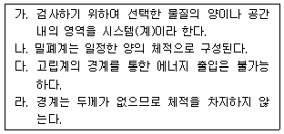
- 가, 다
- 나, 라
- 가, 다, 라
- 가, 나, 다, 라
(정답률: 38%)
38. 용기 안에 있는 유체의 초기 내부에너지는 700kJ이다. 냉각과정 동안 250kJ의 열을 잃고, 용기 내에 설치된 회전날개로 유체에 100kJ의 일을 한다. 최종상태의 유체의 내부에너지(kJ)는 얼마인가?
- 350
- 450
- 550
- 650
(정답률: 38%)
39. 보일러에 온도 40℃, 엔탈피 167kJ/kg인 물이 공급되어 온도 350℃, 엔탈피 3115kJ/kg인 수증기가 발생한다. 입구와 출구에서의 유속은 각각 5m/s, 50m/s이고, 공급되는 물의 양 2000kg/h일 때, 보일러에 공급해야 할 열량(kW)은? (단, 위치에너지 변화는 무시한다.)
- 631
- 832
- 1237
- 1638
(정답률: 46%)
40. 그림과 같은 공기표준 브레이튼(Brayton) 사이클에서 작동유체 1kg당 터빈 일(kJ/kg)은? (단, T1=300K. T2=475.1K, T3=1100K, T4=694.5K이고, 공기의 정압비열과 정적비열은 각각 1.0035kJ/(kgㆍK), 0.7165kJ/(kgㆍK)이다.)
- 290
- 407
- 448
- 627
(정답률: 40%)
3과목: 기계유체역학
41. 모세관을 이용한 점도계에서 원형관 내의 유동은 비압축성 뉴턴 유체의 층류유동으로 가정할 수 있다. 원형관의 입구 측과 출구 측의 압력차를 2배로 늘렸을 때, 동일한 유체의 유량은 몇 배가 되는가?
- 2배
- 4배
- 8배
- 16배
(정답률: 54%)
42. 지름이 10cm인 원통에 물이 담겨져 있다. 수직인 중심축에 대하여 300rpm의 속도로 원통을 회전시킬 때 수면의 최고점과 최저점의 수직 높이차는 약 몇 cm인가?
- 0.126
- 4.2
- 8.4
- 12.6
(정답률: 38%)
43. 그림과 같이 비중이 1.3인 유체 위에 깊이 1.1m로 물이 채워져 있을 때, 직경 5cm의 탱크 출구로 나오는 유체의 평균 속도는 약 몇 m/s인가? (단, 탱크의 크기는 충분히 크고 마찰손실은 무시한다.)
- 3.9
- 5.1
- 7.2
- 7.7
(정답률: 40%)
44. 다음 유체역학적 양 중 질량차원을 포함하지 않는 양은 어느 것인가? (단, MLT 기본차원을 기준으로 한다.)
- 압력
- 동점성계수
- 모멘트
- 점성계수
(정답률: 54%)
45. 그림과 같이 오일이 흐르는 수평관 사이로 두 지점의 압력차 p1-p2를 측정하기 위하여 오리피스와 수은을 넣어 U자관을 설치하였다. p1-p2로 옳은 것은? (단, 오일의 비중량은 γoil이며, 수은의 비중량은 γHg이다.)
- (y1-y2)(γHg-γoil)
- y2(γHg-γoil)
- y1(γHg-γoil)
- (y1-y2)(γoil-γHg)
(정답률: 44%)
46. 속도 포텐셜 Ø=Kθ인 와류 유동이 있다. 중심에서 반지름 r인 원주에 따른 순환(circulation)식으로 옳은 것은? (단, K는 상수이다.)
- 0
- K
- πK
- 2πK
(정답률: 41%)
47. 그림과 같이 평행한 두 원판 사이에 점성계수 μ=0.2Nㆍs/m2인 유체가 채워져 있다. 아래 판은 정지되어 있고 윗 판은 1800rpm으로 회전할 때 작용하는 돌림힘은 몇 Nㆍm인가?
- 9.4
- 38.3
- 46.3
- 59.2
(정답률: 17%)
48. 피에조미터관에 대한 설명으로 틀린 것은?
- 계기유체가 필요 없다.
- U자관에 비해 구조가 단순하다.
- 기체의 압력 측정에 사용할 수 있다.
- 대기압 이상의 압력 측정에 사용할 수 있다.
(정답률: 21%)
49. 밀도가 0.84kg/m3이고, 압력이 87.6kPa인 이상기체가 있다. 이 이상기체의 절대온도를 2배 증가 시킬 때, 이 기체에서의 음속은 약 몇 m/s인가? (단, 비열비는 1.4이다.)
- 380
- 340
- 540
- 720
(정답률: 36%)
50. 평판 위에 점성, 비압축성 유체가 흐르고 있다. 경계층 두께 δ에 대하여 유체의 속도 υ의 분포는 아래와 같다. 이 때 경계층 운동량 두께에 대한 식으로 옳은 것은? (단, U는 상류속도, y는 판판가의 수식거리이다.)
- 0.1δ
- 0.125δ
- 0.133δ
- 0.166δ
(정답률: 28%)
51. 그림과 같이 폭이 2m인 수문 ABC가 A점에서 힌지로 연결되어 있다. 그림과 같이 수문이 고정될 때 수평인 케이블 CD에 걸리는 장력은 약 몇 kN인가? (단, 수문의 무게는 무시한다.)
- 38.3
- 35.4
- 25.2
- 22.9
(정답률: 20%)
52. 지름 100mm관에 글리세린 9.42L/min의 유량으로 흐른다. 이 유동은? (단, 글리세린의 비중은 1.26, 점성계수는 μ2.9×10-4kg/mㆍs이다.)
- 난류유동
- 층류유동
- 천이유동
- 경계층유동
(정답률: 47%)
53. 그림과 같이 날카로운 사각 모서리 입출구를 갖는 관로에서 전수두 H는? (단, 관의 길이를 I, 지름은 d, 관 마찰계수는 f, 속도수두는 이고, 입구 손실계수는 0.5, 출구 손실계수는 1.0이다.)
(정답률: 50%)
54. 현의 길이가 7m인 날개의 속력이 500km/h로 비행할 때 이 날개가 받는 양력이 4200kN이라고 하면 날개의 폭은 약 몇 m인가? (단, 양력계수 CL=1. 항력계수 CD=0.02, 밀도 ρ=1.2kg/m3이다.)
- 51.84
- 63.17
- 70.99
- 82.36
(정답률: 46%)
55. 그림과 같이 물이 유량 Q로 저수조로 들어가고, 속도 로 저수조 바닥에 있는 면적 A2의 구멍을 통하여 나간다. 저수조 수면 높이가 변화하는 속도 는?
(정답률: 41%)
56. 그림과 같이 속도가 V인 유체가 속도 U로 움직이는 곡면에 부딪혀 90°의 각도로 유동 방향이 바뀐다. 다음 중 유체가 곡면에 가하는 힘의 수평방향 성분의 크기가 가장 큰 것은? (단, 유체의 유동단면적은 일정하다.)
- V=10m/s, U=5m/s
- V=20m/s, U=15m/s
- V=10m/s, U=4m/s
- V=25m/s, U=20m/s
(정답률: 55%)
57. 담배연기가 비정상 유동으로 흐를 때 순간적으로 눈에 보이는 담배연기는 다음 중 어떤 것에 해당하는가?
- 유맥선
- 유적선
- 유선
- 유선, 유적선, 유맥선 모두에 해당됨
(정답률: 45%)
58. 중력 가속도 g, 체적유량 Q, 길이 L로 얻을 수 있는 무차원수는?
(정답률: 50%)
59. 길이 150m인 배를 길이 10m 모형으로 조파 저항에 관한 실험을 하고자 한다. 실형의 배가 70km/h로 움직인다면, 실형과 모형 사이의 역학적 상사를 만족하기 위한 모형의 속도는 몇 km/h인가?
- 271
- 56
- 18
- 10
(정답률: 53%)
60. 관로의 전 손실수두가 10m인 펌프로부터 21m 지하에 있는 물을 지상 25m의 송출 액면에 10m3/min의 유량으로 수송할 때 축동력이 124.5kW이다. 이 펌프의 효율은 약 얼마인가?
- 0.70
- 0.73
- 0.76
- 0.80
(정답률: 42%)
4과목: 기계재료 및 유압기기
61. 베밋메탈(babbit metel)에 관한 설명으로 옳은 것은?
- Sn-Sb-Cu계 합금으로서 베어링 재료로 사용된다.
- Cu-Ni-Si계 합금으로서 도전율이 좋으므로 강력 도전 재료로 이용된다.
- Zn-Cu-Ti계 합금으로서 강도가 현저히 개선된 경화형 합금이다.
- Al-Cu-Mg계 합금으로서 상온시효처리하여 기계적 성질을 개선시킨 합금이다.
(정답률: 63%)
62. 고용체합금의 시효경화를 위한 조건으로서 옳은 것은?
- 급냉에 의해 저2상의 석출이 잘 이루어져야 한다.
- 고용체의 용해도 한계가 온도가 낮아짐에 따라 증가해야만 한다.
- 기지상은 단단하여야 하며, 석출문은 연한상이어야 한다.
- 최대 강도 및 경도를 얻기 위해서는 기지 조직과 정합상태를 이루어야만 한다.
(정답률: 41%)
63. 고 Mn강(hadfeld steel)에 대한 설명으로 옳은 것은?
- 고온에서 서냉하면 M3C가 석출하여 취약해진다.
- 소성 변형 중 가공경화성이 없으며, 인장강도가 낮다.
- 1200℃ 부근에서 급랭하여 마텐자이트 단상으로 하는 수인법을 이용한다.
- 열전도성이 좋고 팽창계수가 작아 열변형을 일으키지 않는다.
(정답률: 22%)
64. 플라스틱 재료의 일반적인 특징으로 옳은 것은?
- 내구성이 매우 좋다.
- 완충성이 매우 낮다.
- 자기 윤활성이 거의 없다.
- 복합화에 의한 재질의 개량이 가능하다.
(정답률: 54%)
65. 현미경 조직 검사를 실시하기 위한 철강용 부식제로 옳은 것은?
- 왕수
- 질산 용액
- 나이탈 용액
- 염화제2철 용액
(정답률: 27%)
66. 상온의 금속(Fe)을 가열 하였을 때 체심입방격자에서 면심입방격자로 변하는 점은?
- A0변태점
- A2변태점
- A3변태점
- A4변태점
(정답률: 45%)
67. 스테인리스강을 조직에 따라 분류할 때의 기준 조직이 아닌 것은?
- 페라이트계
- 마텐자이트계
- 시멘타이트계
- 오스테나이트계
(정답률: 52%)
68. 담금질한 공석강의 냉각 곡선에서 시편을 20℃의 물 속에 넣었을 때 ㉮와 같은 곡선을 나타낼 때의 조직은?
- 펄라이트
- 오스테나이트
- 마텐자이트
- 베이나이트+펄라이트
(정답률: 42%)
69. 항온 열처리 방법에 해당하는 것은?
- 뜨임(tempering)
- 어닐링(annealing)
- 마퀜칭(marquenching)
- 노멀라이징(normalizing)
(정답률: 47%)
70. 고강도 합금으로써 항공기용 재료에 사용되는 것은?
- 베릴륨 등
- Naval brass
- 알루미늄 청동
- Extra Super Duralumin
(정답률: 66%)
71. 유체 토크 컨버터의 주요 구성 요소가 아닌 것은?
- 펌프
- 터빈
- 스테이터
- 릴리프 밸버
(정답률: 38%)
72. 미터 아웃 회로에 대한 설명으로 틀린 것은?
- 피스톤 속도를 제어하는 회로이다.
- 유량 제어 밸브를 실린더의 입구측에 설치한 회로이다.
- 기본형은 부하변동이 심한 공작기계의 이송에 사용된다.
- 실린더에 배압이 걸리므로 끌어당기는 하중이 작용해도 자주 할 염려가 없다.
(정답률: 65%)
73. 압력 제어 밸브의 종류가 아닌 것은?
- 체크 밸브
- 감압 밸브
- 릴리프 밸브
- 카운터 밸런스 밸브
(정답률: 63%)
74. 유압유의 구비조건으로 적절하지 않은 것은?
- 압축성이어야 한다.
- 점도 지수가 커야한다.
- 열을 방출시킬 수 있어야 한다.
- 기름중의 공기를 분리시킬 수 있어야 한다.
(정답률: 58%)
75. 유압 장치의 특징으로 적절하지 않은 것은?
- 원격 제어가 가능하다.
- 소형 장치로 큰 출력을 얻을 수 있다.
- 먼지나 이물질에 의한 고장의 우려가 없다.
- 오일에 기포가 섞여 작동이 불량할 수 있다.
(정답률: 66%)
76. 유압 실린더 취급 및 설계 시 주의사항으로 적절하지 않은 것은?
- 적당한 위치에 공기구멍을 장치한다.
- 쿠션 장치인 쿠션 밸브는 감속범위의 조정용으로 사용한다.
- 쿠션장치인 쿠션링은 헤드 엔드축에 흐르는 오일을 촉진한다.
- 원칙적으로 더스트 와이퍼를 연결해야 한다.
(정답률: 47%)
77. 그림의 유압 회로도에서 ①의 밸브 명칭으로 옳은 것은?
- 스톱 밸브
- 릴리프 밸브
- 무부하 밸브
- 카운터 밸런스 밸브
(정답률: 64%)
78. 펌프에 대한 설명으로 틀린 것은?
- 피스톤 펌프는 피스톤을 경사판, 캠, 크랭크 등에 의해서 왕복 운동시켜, 액체를 흡입 쪽에서 토출 쪽으로 밀어내는 형식의 펌프이다.
- 레이디얼 피스톤 펌프는 피스톤의 왕복 운동 방향이 구동축에 거의 직각인 피스톤 펌프이다.
- 기어 펌프는 케이싱 내에 물리는 2개 이상의 기어에 의해 액체를 흡입 쪽에서 토출 쪽으로 밀어내는 형식의 펌프이다.
- 터보 펌프는 덮개차를 케이싱 외에 회전시켜, 액체로부터 운동 에너지를 뺏어 액체를 토출하는 형식의 펌프이다.
(정답률: 42%)
79. 채터링 현상에 대한 설명으로 적절하지 않은 것은?
- 소음을 수반한다.
- 일종의 자려 진동현상이다.
- 감압 밸브, 릴리프 밸브 등에서 발생한다.
- 압력, 속도 변화에 의한 것이 아닌 스프링의 강성에 의한 것이다.
(정답률: 64%)
80. 그림과 같은 유압 기호의 명칭은?
- 경음기
- 소음기
- 리밋 스위치
- 아날로그 변환기
(정답률: 43%)
5과목: 기계제작법 및 기계동력학
81. 국제단위체계(SI)에서 1N에 대한 설명으로 맞는 것은?
- 1g의 질량에 1m/s2의 가속도를 주는 힘이다.
- 1g의 질량의 1m/s의 속도를 주는 힘이다.
- 1kg의 질량 1m/s2의 가속도를 주는 힘이다.
- 1kg의 질량에 1m/s의 속도를 주는 힘이다.
(정답률: 61%)
82. 30°로 기울어진 표면에 질량 50kg인 블록이 질량 m인 추와 그림과 같이 연결되어 있다. 경사 표면과 블록 사이의 마찰계수가 0.5일 때 이 블록을 경사면으로 끌어올리기 위한 추의 최소 질량은 약 몇 kg인가?
- 36.5
- 41.8
- 46.7
- 54.2
(정답률: 38%)
83. 그림과 같이 질량이 동일한 두 개의 구슬 A, B가 있다. 초기에 A의 속도는 v이고 B는 정지되어 있다. 충돌 수 A와 B의 속도에 관한 설명으로 맞는 것은? (단, 두 구슬 사이의 반발계수는 1이다.)
- A와 B 모두 정지한다.
- A와 B 모두 v의 속도를 가진다.
- A와 B 모두 v/2의 속도를 가진다.
- A는 정지하고 B는 v의 속도를 가진다.
(정답률: 55%)
84. 그림과 같이 최초 정지상태에 있는 바퀴에 줄이 감겨있다. 힘을 가하여 줄의 가속도(a)가 a=4t[m/s2]일 때 바퀴의 각속도(ω)를 시간의 함수로 나타내면 몇 rad/s인가?
- 8t2
- 9t2
- 10t2
- 11t2
(정답률: 37%)
85. 그림과 같이 질량이 10kg인 봉의 끝단이 홈을 따라 움직이는 블록 A, B에 구속되어 있다. 초기에 θ=0°에서 정지하여 있다가, 블록 B에 수평력 P=50N이 작용하여 °=45°가 되는 순간의 봉의 각속도는 약 몇 rad/s인가? (단, 블록 A와 B의 질량과 마찰은 무시하고, 중력가속도 g=9.81m/s2이다.)
- 3.11
- 4.11
- 5.11
- 6.11
(정답률: 10%)
86. 스프링상수가 20N/cm와 30N/cm인 두 개의 스프링을 직렬로 연결했을 때 등가스프링 상수 값은 몇 N/cm인가?
- 10
- 12
- 25
- 50
(정답률: 54%)
87. 엔진(질량 m)의 진동이 공장 바닥에 직접 전달될 때 바닥에 힘이 F0sinωt로 전달된다. 이 때 전달되는 힘을 감소시키기 위해 엔진과 바닥 사이에 스프링(스프링 상수 K)과 댐퍼(감쇠상수 c)를 달았다. 이를 위해 진동계의 고유진동수(ωn)와 외력의 진동수(ω)는 어떤 관계를 가져야 하는가? (단, 이고, t는 시간을 의미한다.)
- ωn＞ω
- ωn＜2ω
(정답률: 46%)
88. 90km/h의 속력으로 달리던 자동차가 100m 전방의 장애물을 발견한 후 제동을 하여 장애물 바로 앞에 정지하기 위해 필요한 제동력의 크기는 몇 N인가? (단, 자동차의 질량은 1000kg이다.)
- 3125
- 6250
- 4⑤00
- 81000
(정답률: 38%)
89. 다음 중 계의 고유진동수에 영향을 미치지 않는 것은?
- 계의 초기조건
- 진동물체의 질량
- 계의 스프링 계수
- 계를 형성하는 재료의 탄성계수
(정답률: 42%)
90. 그림과 같이 질량이 m인 물체가 탄성스프링으로 지지되어 있다. 초기위치에서 자유낙하를 시작하고, 초기 스프링의 변형량이 0일 때, 스프링의 최대 변형량(x)은? (단, 스프링의 질량은 무시하고, 스프링상수는 k, 중력가속도는 g이다.)
(정답률: 23%)
91. 숏피닝(shot peening)에 대한 설명으로 틀린 것은?
- 숏피닝은 얇은 공작물일수록 효과가 크다.
- 가공물 표면에 작은 해머와 같은 작용을 하는 형태로 일종의 열간 가공법이다.
- 가공물 표면에 가공경화된 잔류 압축응력층이 형성된다.
- 반복하중에 대한 피로파괴에 큰 저항을 갖고 있기 때문에 각종 스프링에 널리 이용된다.
(정답률: 43%)
92. 오스테나이트 조직을 굳은 조직인 베이나이트로 변환시키는 항온 변태 열처리법은?
- 서브제로
- 마템퍼링
- 오스포밍
- 오스템퍼링
(정답률: 49%)
93. 전기 도금의 반대현상으로 가공물을 양극, 전기저항이 적은 구리, 아연을 음극에 연결한 후 용액에 침지하고 통전하여 금속표면의 미소 돌기부분을 용해하여 거울면과 같이 광택이 있는 면을 가공할 수 있는 특수가공은?
- 방전가공
- 전주가공
- 전해연마
- 슈퍼피니싱
(정답률: 52%)
94. 주철과 같은 강하고 깨지기 쉬운 재료(매진 재료)를 지속으로 절삭할 때 생기는 칩의 형태는?
- 균열형 칩
- 유동형 칩
- 열단형 칩
- 전단형 칩
(정답률: 45%)
95. 두께 50mm의 연강판을 압연 롤러를 통과시켜 40mm가 되었을 때 압하율은 몇 %인가?
- 10
- 15
- 20
- 25
(정답률: 62%)
96. 용접의 일반적인 장점으로 틀린 것은?
- 품질검사가 쉽고 잔류응력이 발생하지 않는다.
- 재료가 절약되고 중량이 가벼워진다.
- 작업 공정수가 감소한다.
- 기밀성이 우수하며 이음 효율이 향상된다.
(정답률: 54%)
97. 프레스가공에서 전단가공의 종류가 아닌 것은?
- 블랭킹
- 트리밍
- 스웨이징
- 셰이빙
(정답률: 54%)
98. 주물사에서 가스 및 공기에 해당하는 기체가 통과하여 빠져나가는 성질은?
- 보온성
- 반복성
- 내구성
- 통기성
(정답률: 64%)
99. 선반가공에서 직경 60mm, 길이 100mm의 탄소강 재료 환봉을 초경바이트로 사용하여 1회 절삭 시 가공시간은 약 몇 초인가? (단 절삭 깊이 1.55mm, 절삭속도 150m/mim, 이송은 0.2mm/rev이다.)
- 38
- 42
- 48
- 52
(정답률: 24%)
100. 침탄법에 비해서 경화층은 얇으나, 경도가 크고 담금질이 필요 없으며, 내식성 및 내마모성이 커서 고온에도 변화되지 않지만 처리시간이 길고 생산비가 많이 드는 표면 경화법은?
- 마퀜칭
- 질화법
- 화염 경화법
- 고주파 경화법
(정답률: 58%)
P = 2πNT/60
여기서, P는 동력 (kW), N은 회전수 (rpm), T는 토크 (N·m)이다.
따라서, 토크 T는 다음과 같이 구할 수 있다.
T = 60P/2πN
여기서, P는 147kW, N은 2000rpm이므로,
T = 60 × 147 × 1000 / 2π × 2000 ≈ 5550 N·m
원형단면 축의 최대전단응력은 다음과 같이 구할 수 있다.
τmax = Tc / J
여기서, Tc는 최대전단응력 (N/m2), J는 균일원형단면의 폴라모멘트 (m4)이다.
원형단면 축의 폴라모멘트 J는 다음과 같이 구할 수 있다.
J = πd4 / 32
여기서, d는 축 지름이다.
따라서, 축 지름 d는 다음과 같이 구할 수 있다.
d = (32Tc / πτmax)1/3
여기서, Tc는 5550 N·m, τmax는 50 MPa이므로,
d = (32 × 5550 / π × 50 × 106)1/3 ≈ 0.042 m = 4.2 cm
따라서, 축 지름은 약 4.2 cm이어야 한다.